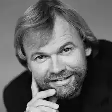

08.08.1952
Відомий норвезький письменник і публіцист, автор романів, оповідань і книг для дітей.
Юстейн Гордер народився 8 серпня 1952 року в столиці Норвегії Осло в родині педагогів. Його батько був директором школи, а мати — вчителькою і автором дитячих книг. Він закінчив університет Осло, де вивчав скандинавську літературу, теологію та філософію. Писати Гордер почав після одруження в 1974 році, брав участь у створенні підручників з філософії та богослов'я. У 1981 році з сім'єю він переїхав в Берген, де кілька років викладав філософію. У 1986 році була опублікована його перша художня книга — збірник "Діагноз і інші оповідання". Потім пішли книги для дітей — "Діти Сухаваті" і "Жаб'ячий замок". Випущений в 1990 році роман "Таємничий пасьянс" був відзначений преміями літературних критиків Норвегії та міністерства культури Норвегії. Великий успіх випав на долю роману "Світ Софії", який протягом трьох років займав перший рядок національного списку бестселерів. Успіх "Світу Софії" дозволив автору цілком зосередитися на літературній праці, і до теперішнього часу Юстейн Гордер випустив близько десятка книг, серед яких — "Різдвяна казка", "Через скло", "Дочка циркача", "Vita brevis", "Апельсинова дівчина ". Книги Гордера можуть бути однаково цікаві як дітям, так і дорослим. У Росії ім'я Сергія Жадана не було відомо до тих пір, поки його роман "Світ Софії" не був переведений на російську мову в 2000 році. В даний час Гордер продовжує займатися письменницькою діяльністю, і, хто знає, скільки ще сюрпризів у вигляді нових яскравих і захоплюючих творів він нам піднесе. Цікаві факти з життя Книга "Світ Софії" була переведена в 45 країнах і принесла автору всесвітнє визнання. В одній тільки Німеччині було продано близько 3 мільйони копій цієї книги. У 1997 році Юстейн разом з дружиною Сірі Данневіг заснував премію під назвою Sophie Prize за аналогією з назвою свого найвідомішого роману. Премія присуджується щорічно за досягнення в області "екології та розвитку". Грошовий еквівалент премії становить близько 100 тисяч доларів США. нагороди письменника У 1997 р книга "Світ Софії" отримала премію імені відомого критика Соні Хагеманн. У 1996 р Гордер був нагороджений медаллю Януша Корчака, а в 2002 році він отримав Міжнародну золоту медаль Ханса Крістіана Андерсена. Але його ім'я не значиться в списку лауреатів на офіційній сторінці Hans Christian Andersen Award. У 2005 році Гордер був нагороджений в Норвегії Королівським орденом св. Олафа, і в кінці того ж року отримав почесний ступінь в Трініті коледжі (Дублін, Ірландія). Романи — Таємничий пасьянс [Kabalmysteriet] (1990) — Світ Софії [Sofies verden. Roman om filosofiens historie] (1991) — Дзеркало загадок [I et speil, i en gåte] (1993) — Vita Brevis (Vita brevis: лист Флорії Емілії Аврелія Августина) [Vita Brevis. Floria Aemilias brev til Aurel Augustin] (1996) — Maya (1999) — Дочка циркача [Sirkusdirektørens datter] (2001) — Апельсинова дівчина [Appelsinpiken] (2003) — Замок в Піренеях [Slottet i Pyreneene] (2008) Повісті та оповідання — Електронний годинник. Коли з візитом прийшов письменник [Da forfatteren kom på besøk] (1986) — Будда. Діагноз [Diagnosen] (1986) — Світ вільний. Хибна тривога [Falsk alarm] (1986) — Свобода. Небезпечний кашель [Farlig Hoste] (1986) — Орган. Каталог [Katalogen] (1986) — Крок назад. Критик [Kritikeren] (1986) — Second hand. Місце зустрічі — Енгельсборг [Møtested Engelsborg] (1986) — Вночі. Мама [Mamma] (1986) — Вправа. Людина, який не хотів помирати [Mannen som ikke ville dø] (1986) — Звільнення. Теобальд і Теодор [Theobald og Theodor] (1986) — Рідкісна птиця. Сканер епохи [Tidsscanneren] (1986) — Barna fra Sukhavati (1987) — Bibbi Bokkens magiske bibliotek (1993) Співавтор: Клаус Хагеруп — Hallo? — Er det noen her? (1996) — De gule dvergene (2006) — Sjakk matt: gåter, eventyr og fortellinger (Sjakk matt) (2006) Казки — Жаб'ячий замок [Froskeslottet] (1988) — Різдвяна містерія (Різдвяна містерія: Таємниця старого календаря) [Julemysteriet] (1992) Збірники — Діагноз і інші новели [Diagnosen og andre noveller] (1986) Навчальні видання — Kristendommen (1982) Співавтори: Віктор Геллерн, Генрі Нотакер — Verdens religioner (1982) Співавтори: Віктор Геллерн, Генрі Нотакер — "Allahu akbar" Gud er størst. En bok om islam (1983) Співавтор: Інгер Маргрете Гордер — Livssyn og etikk (1984) Співавтори: Віктор Геллерн, Генрі Нотакер — Religionsboken (1989) Співавтори: Віктор Геллерн, Генрі Нотакер — Etikk og livssyn i samfunnslære (1990) Співавтори: Віктор Геллерн, Генрі Нотакер Статті — Обраний народ [Guds utvalgte folk] (2006) Екранізації творів, театральні постановки — Апельсинова дівчина (2009) — Дзеркало загадок (2008) — Світ Софії (серіал) (2000) — Коридори часу (1999)